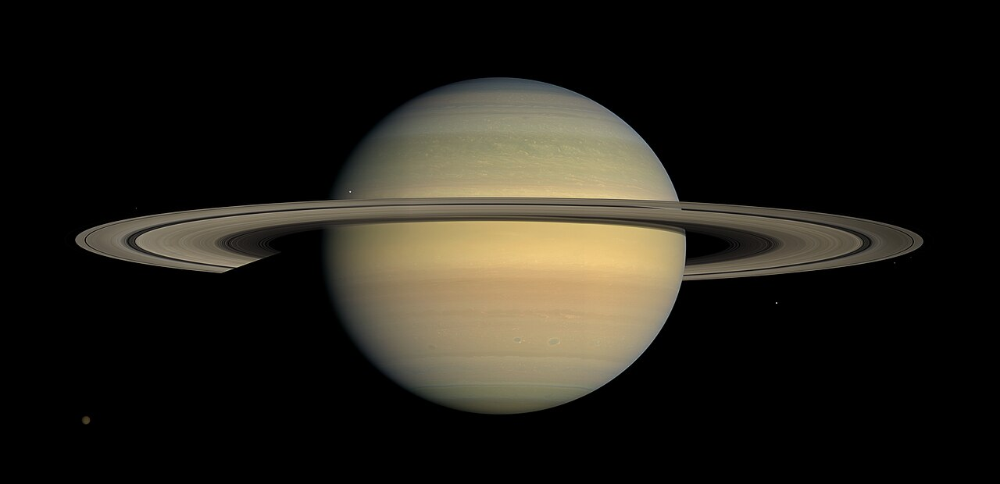
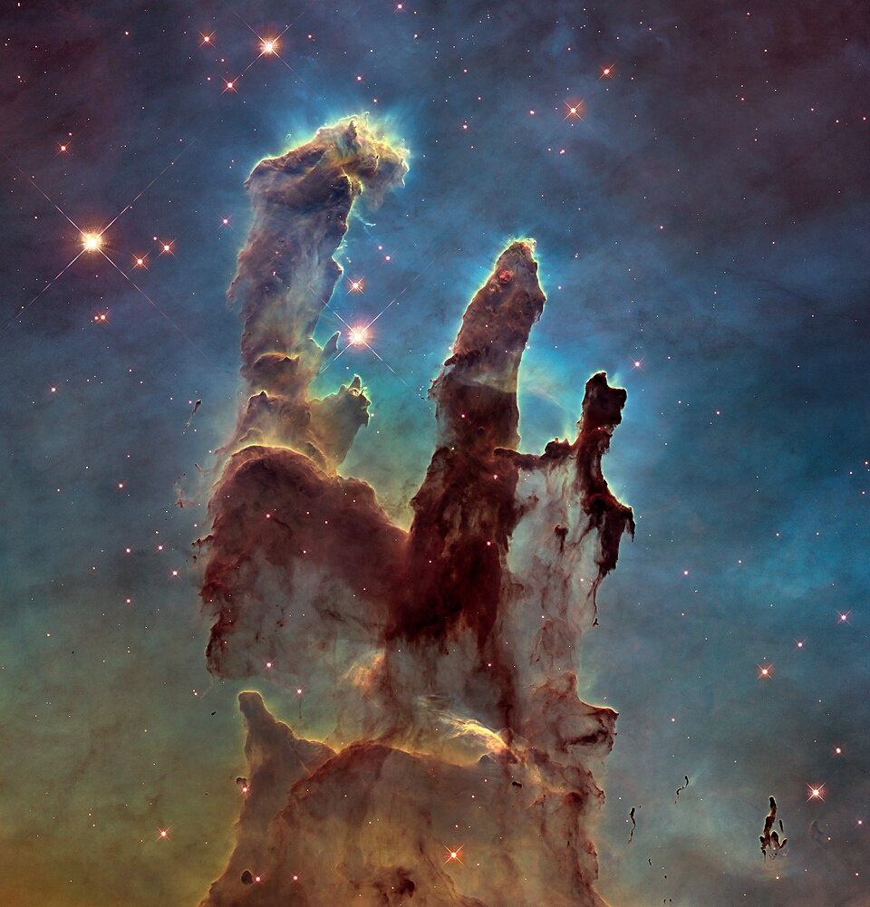
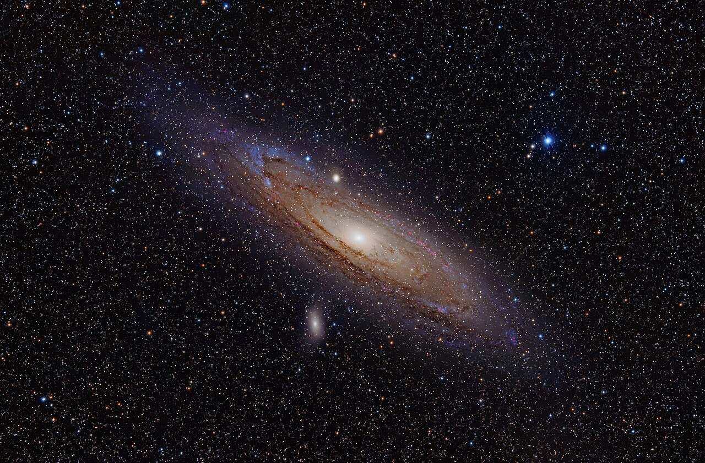

16:00 – 17:30☀️
Prima del Buio
Attività diurne, cromosfera solare e microscopia
Fase SolarePriorità Diurna
✨ Festeggiamo in anticipo il tuo compleanno del 26 ottobre con un regalo d'esperienza scientifica immersiva sotto il cielo autunnale!
Questa serata a Monte Viseggi è stata pensata come un'opportunità speciale per esplorare l'Universo, toccare con mano strumentazioni d'avanguardia, dialogare con i ricercatori e brindare insieme a una grande passione. Buon compleanno, Jo! 🥂
Benvenuto a questo eccezionale viaggio immersivo tra le meraviglie del cosmo! La serata di sabato 24 ottobre, organizzata dall'Associazione Astrofili Spezzini A.P.S. presso l'Osservatorio Astronomico di Monte Viseggi (La Spezia), rappresenta un'esperienza unica, immersa nella natura collinare che sovrasta il Golfo. Cancelli aperti dalle 15:30, inizio attività 16:00, conclusione ore 22:30.





Un percorso strategico in 3 fasi cronologiche per godersi al massimo l'alternanza tra luce solare, crepuscolo e cielo notturno. Spunta le attività man mano che le completi!
Attività diurne, cromosfera solare e microscopia
Transizione metodologica e caccia ai corpi celesti
Telescopi notturni, Saturno e Brindisi per te!
Clicca su qualsiasi tavolo per aprire la scheda di approfondimento completa con strumenti ed esperienze interattive.
Jo, ecco tutto quello che tu e la tua accompagnatrice dovete sapere per vivere l'esperienza all'Osservatorio di Monte Viseggi in totale comfort.
Abbigliamento consigliato per Monte Viseggi
L'Osservatorio si trova sulla cima del monte. Con il calare del Sole la temperatura scende facilmente tra i 10°C e i 14°C (o meno) per via della brezza e dell'umidità.
Brindisi di compleanno e ristoro
Il biglietto include una bevanda a scelta (perfetta per il brindisi del tuo compleanno!). Sul posto sarà disponibile food leggero acquistabile separatamente.
Sabato 24 Ottobre • La Spezia
Indirizzo: Osservatorio Astronomico di Monte Viseggi, Via Viseggi 15, 19134 La Spezia (SP). Parcheggio gratuito in loco.
Clicca sul pulsante qui sotto per scatenare una pioggia di stelle filanti e coriandoli spaziali e generare un messaggio di compleanno unico dedicato alle stelle!